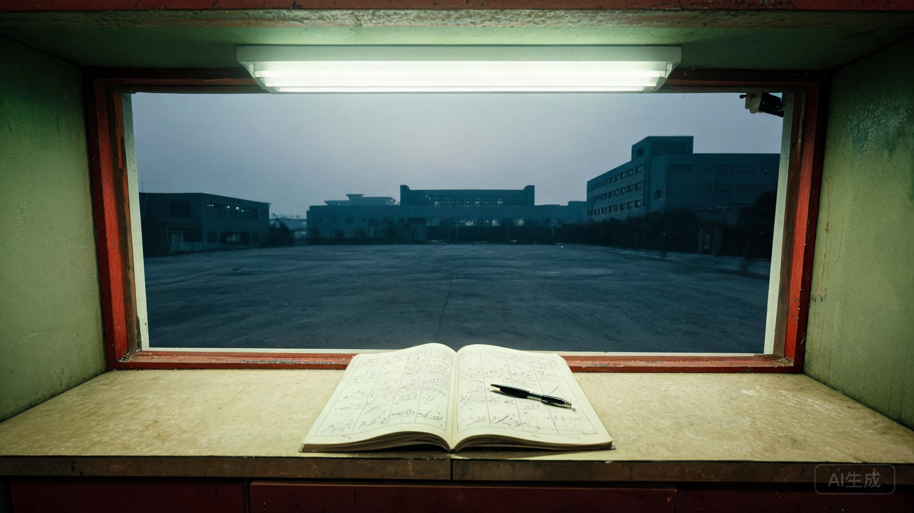

第四制药厂 · 保卫科 · 1998年10月7日
“进出厂区必须登记。夜里封门以后，任何人不得进入地下层。”

| 时间 | 姓名 | 事由 | 备注 |
|---|---|---|---|
| 16:02 | 赵长顺 | 接班 | — |
| 17:58 | 陈卫东 | 下班离厂 | 把工牌落在窗台上 |
| 18:06 | 李素芬 | 送饭盒 | 说陈卫东已经回家了 |
| 19:10 | 郑国华 | 外出 | 未写去处 |
| 19:47 | — | （空） | 大门无人值守十四分钟 |
| 21:40 | 改制小组 | 卡车进地下通道 | 三辆车，装的是铁皮箱 |
| 22:00 | 郑国华 | 封闭地下层 | 亲手锁门 |
| 22:06 | 赵长顺 | 巡夜 | 听见地下有敲击声 |
| 23:40 | — | 爆破 | 主楼倒塌 |
登记簿里最刺眼的是两行：17:58，陈卫东离厂；22:00，郑国华封闭地下层。中间的两小时零两分钟，父亲像从记录里被剪掉了。
备注里说，他的工牌落在窗台上。工号是 04071。更衣柜是 No.071。保卫科的老赵还记得，那个柜子的密码锁“从来只用工号后四位”。
22:06 巡夜那一行，后面本来还写了半句话，被水泡开了。能认出来的只有三个字：“里面有人”。